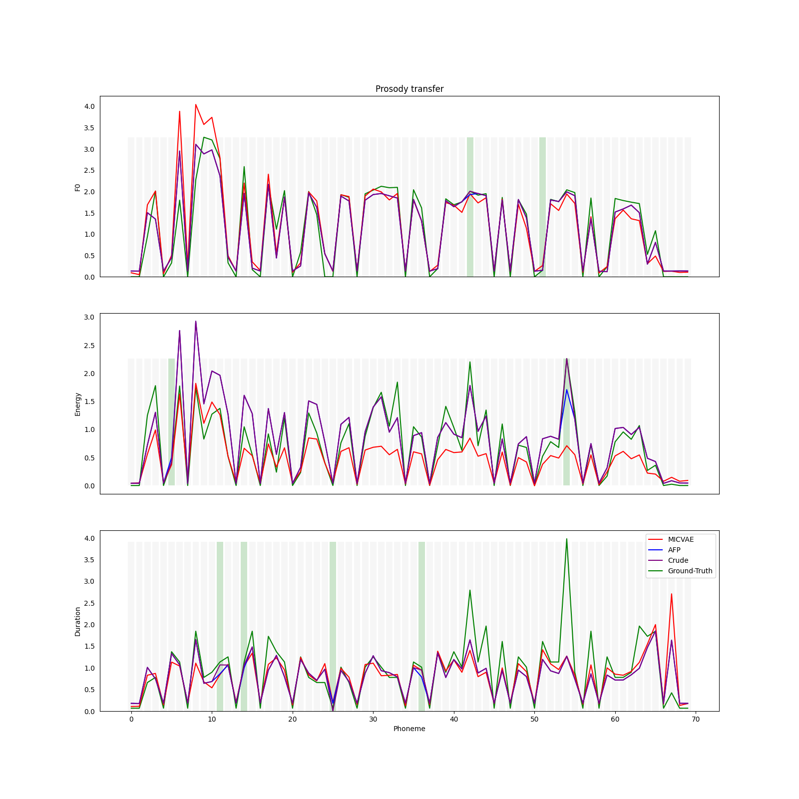
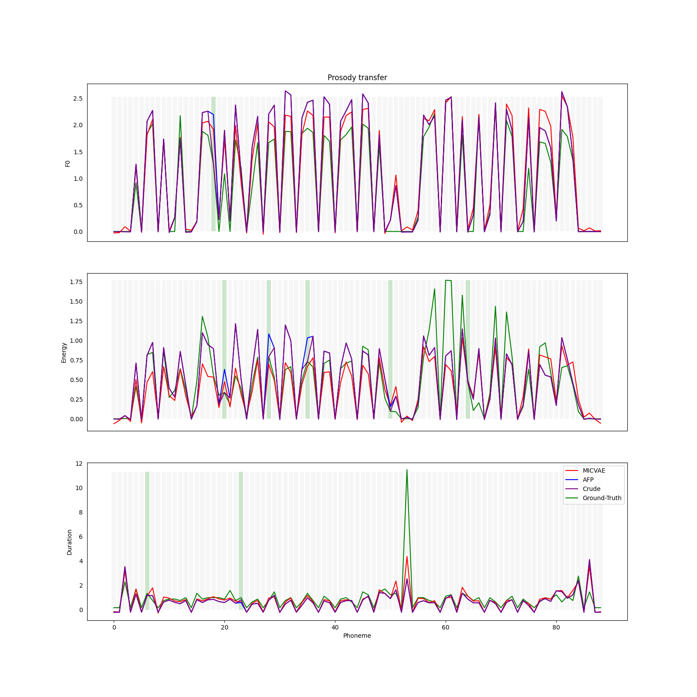
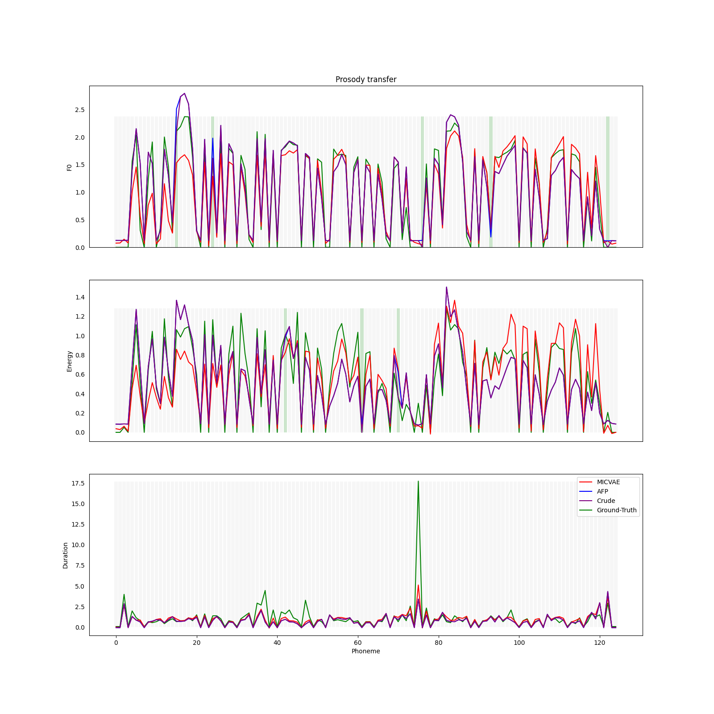

These speech samples accompany a paper submitted for review at the ICASSP-2024. We introduce a novel framework for generation control whereby an encoder maps a sparse, human-interpretable control space onto the latent space of a generative model. We apply this framework to the problem of prosody control in text-to-speech synthesis. Within this framework, we propose a model, called Multiple-Instance CVAE (MICVAE), that is specifically designed to encode sparse prosodic features and output complete waveforms. We demonstrate empirically that MICVAE possesses the main desirable qualities for a human-in-the-loop control method: efficiency, robustness, and faithfulness. With even a very small number of provided values, a user can use MICVAE to control the rendition and produce a large improvement in the listener preference.
We consider the following systems for prosody control:
| Name | Description |
| 1. MICVAE | Our model. Conditional Variational Autoencoder with a Self-Attention encoder. |
| 2. CVAE | Conditional Variational Autoencoder (same decoder as our model) with an RNN encoder and masked inputs. |
| 3. AFP | Acoustic Feature Predictor. Prosody generated using only the decoder from our model, no control is taking place. |
| 4. Crude-Control | The same as AFP, but some of the features are changed manually in the output. The same features are changed as with MICVAE and CVAE. |
Text: "¿de qué obras es hijo, pues me niega mi soldada y mi sudor y trabajo?"
| Ground-Truth | MICVAE | CVAE | Crude-Control | AFP |
Text: "A mí estos políticos de hoy en día me dan un asco, pero un asco que ni te imaginas."
| Ground-Truth | MICVAE | CVAE | Crude-Control | AFP |
Text: "Nos despertábamos a eso de las ocho u nueve en el silencio de los Alpes y bajábamos a desayunar en el salón del hotel."
| Ground-Truth | MICVAE | CVAE | Crude-Control | AFP |